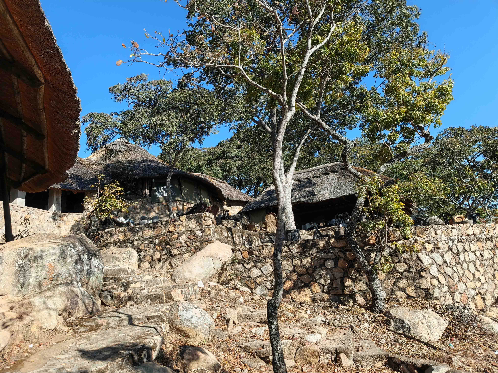

ABOUT OCHI SAFARI LODGE
Peace, tranquility and unforgettable experiences just 32km from Harare CBD.
OUR STORY
Ochi Safari Lodge is one of the finest and oldest resort areas in Zimbabwe, created to offer visitors peace and tranquility in an unmatched setting of greenery and vastness.
Located just 32km from Harare CBD, Ochi Safari Lodge provides a peaceful escape from the chaos of the city while remaining close enough for convenient access.
From corporate conferences and retreats to family outings, weddings, accommodation and leisure, Ochi provides a destination where people can come together, relax and create lasting memories.

OUR SETTING
Set amongst spacious lawns and open grounds, Ochi Safari Lodge offers guests an environment where they can slow down, breathe and reconnect.
The lodge is surrounded by friendly wildlife and offers breathtaking scenic views of the Domboshava Mountain Range.
OUR PHILOSOPHY
Every experience at Ochi Safari Lodge is centred around creating a comfortable, peaceful and welcoming environment for our guests.
Step away from the noise and pressure of everyday life and enjoy the peace of our natural surroundings.
Bring people together through conferences, team building, family outings, celebrations and shared experiences.
Discover wildlife, culture, scenic beauty, dining, events and activities designed to make your stay memorable.
WHY OCHI
Ochi Safari Lodge combines a peaceful natural environment with facilities designed for business, leisure and celebration.
Enjoy breathtaking views of the Domboshava Mountain Range and spacious open grounds.
Experience the natural atmosphere of a destination surrounded by friendly wildlife.
Escape the city without travelling far. Ochi is approximately 32km from Harare CBD.
From business conferences to family outings, weddings and corporate retreats, Ochi provides space for different occasions.
THE OCHI EXPERIENCE
Whether you are visiting for business, leisure, celebration or simply looking for somewhere peaceful to escape, Ochi Safari Lodge welcomes you.
Talk To Us On WhatsAppVISIT OCHI
Find us at Plot 1 & 2 Killarney Plaza, Borrowdale, Harare, approximately 32km from Harare CBD via Domboshava Road, Glen Forest Turn Off and Ochi Farm Turn Off.